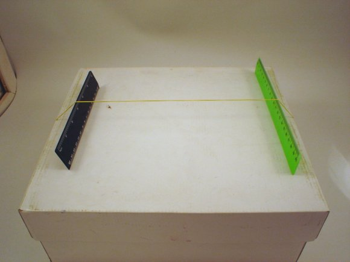
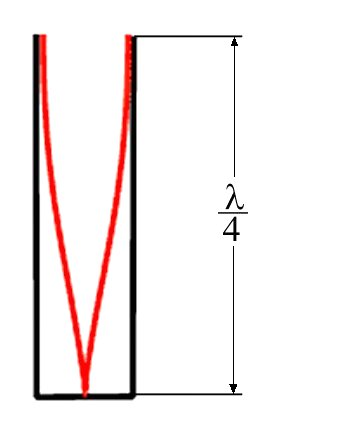
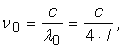
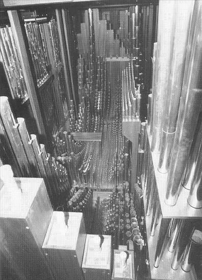

Acustica
D.3. |
|
Instrumente muzicale |
 Activitatea experimentală 1D3−1
Activitatea experimentală 1D3−1
Investighează generarea de unde staţionare în fire tensionate (vezi şi provocarea 13 de la secţiunea 1C).
Pasul 1 Întinde vertical un fir elastic în faţa monitorului unui calculator care afişează un ecran alb.
Pasul 2 Perturbă firul cu unul dintre degetele libere şi observă firul în lumina emisă de monitor.
Modifică tensionarea firului până când vezi un fir staţionar, chiar dacă acesta vibrează.
Auzi vreun sunet care ar putea proveni de la fir?
Numără câte ventre vezi pe lungimea firului tensionat.
Pasul 3 Măreşte tensiunea până când din nou firul pare "încremenit".
Câte ventre poţi număra acum?
Cum "sună" acum firul?
Imaginea unui monitor (sau televizor) este reîmprospătată de câteva zeci de ori pe secundă (screen refresh rate).
Dacă un obiect se mişcă rapid între tine şi ecranul monitorului, obiectul va fi iluminat intermitent, de câteva zeci de ori pe secundă.
Pentru un obiect care se mişcă periodic, ceea ce vezi depinde esenţial de raportul dintre frecvenţa oscilaţiilor corpului şi frecvenţa iluminării
intermitente.
Când cele două frecvenţe coincid, iluminarea intermitentă va surprinde mereu corpul în aceeaşi pozitie − vei vedea obiectul ca şi când ar sta!
Acesta este efectul stroboscopic şi reprezintă o metodă foarte eficientă pentru observarea proceselor periodice, prea rapide pentru a putea fi
percepute direct.
 Provocarea 1D3−1
Provocarea 1D3−1
Poţi afla cât este frecvenţa cu care vibrează firul, atunci când îl vezi "încremenit" în lumina intermitentă a monitorului?
În timpul activităţii experimentale precedente, ai sesizat un sunet slab, produs de firul care vibrează. Frecvenţa acestui sunet este mai mare atunci când
firul este întins mai mult.
Sunetul este slab, pentru că între fir şi aerul care mijloceşte transferul undelor sonore există un cuplaj foarte slab (firul subţire întâlneşte relativ
puţine molecule de aer).
Cuplajul ar putea fi îmbunătăţit mărind numărul moleculelor de aer puse în vibraţie.
Activitatea experimentală 1D3−2
Realizează un instrument muzical cu mijloace la îndemână!
Pasul 1 Trece o buclă elastică (din cele care sunt folosite pentru legarea borcanelor sau a teancurilor de bancnote) peste o cutie de
pantofi (în lungul acesteia).
Pasul 2 Pune sub banda elastică, către capetele cutiei, două rigle mici, astfel ca banda să se sprijine pe muchiile ascuţite ale
acestora (figura 1D3−1).

Fig. 1D3-1. Instrument muzical realizat cu mijloace la îndemână.
Pasul 3 Pune în vibraţie firul, atingându−l uşor cu degetul. Cum "sună" acum firul?
Pasul 4 Pune sub fir încă o riglă (mai lată decât celelalte două) şi pune în vibraţie, pe rând, cele două secţiuni ale firului.
Compară sunetele pe care le generezează fiecare secţiune.
Pasul 5 Modifică poziţia riglei centrale. Compară, de fiecare dată, sunetele generate de fiecare secţine.
Poţi interpreta o melodie simpla folosind acest instrument?
Instrumentul muzical pe care l−ai realizat este unul dintre cele mai vechi instrumente − numit monocord (pentru că are o singură
coardă).
Sunetul pe care îl obţii este considerabil mai puternic şi mai clar decât în cazul firului ţinut în mâini.
Riglele transferă cutiei vibraţiile firului. Suprafaţa cutiei fiind de sute de ori mai mare decât cea a firului, mult mai multe molecule de aer vor fi
puse în vibraţie, mărind considerabil intensitatea acustică şi, în consecinţă, tăria sunetului pe care îl auzi.
Provocarea 1D3−2
Cu câţi decibeli te aştepţi să crească nivelul intensităţii acustice, dacă sunt puse în vibraţie, cu aceeaşi amplitudine, de o sută de ori mai multe
molecule de aer?
Instrumentele cu corzi (cum sunt chitara, vioara sau pianul) funcţionează asemănător monocordului, doar că au mai multe corzi.
Se aleg materiale mai potrivite, corzi metalice şi cutii din lemn, având forme speciale, pentru a obţine un suntet calitativ superior.
Instrumentele cu corzi generează unde stationare în firele tensionate ca urmare a perturbării acestora: prin atingere (în cazul chitarei), prin frecare cu
un arcuş (în cazul viorii) sau prin lovire cu ciocănel, la apăsarea unei clape (în cazul pianului).
Prin modificarea individuală a tensiunii în fiecare coardă, se poate alege frecvenţa pe care o generează fiecare coardă în modul fundamental (cu un ventru
central şi două noduri la capete).
Compoziţia spectrală a sunetului generat depinde de mulţi factori, printre care: modul în care firul este pus în vibraţie, precum şi frecvenţele de
rezonanţă ale cutiei (contează chiar şi lacul care acoperă cutia de rezonanţă!).
De aceea, instrumentele cu corzi de înaltă calitate timbrală sunt rare (şi deosebit de scumpe!).
Activitatea experimentală 1D3−3
Investighează generarea sunetelor în coloane de aer care vibrează.
Pasul 1 Suflă razant la gura unei sticle goale. Reuşeşti să obţii un sunet puternic?
Pasul 2 Toarnă puţină apă în sticlă. Cum "sună" aceasta acum?
Mai adaugă puţină apă. Cum se modifică sunetul?
Instrumentele de suflat generează unde staţionare într−o coloană de aer delimitată de un tub, asemenea aerului delimitat de pereţii sticlei.
Provocarea 1D3−3
Cât te aştepţi să fie frecvenţa fundamentală a undelor staţionare generate în aerul dintr−un tub închis la un capăt?
La partea închisă, amplitudinea de vibraţie a moleculelor aerului este mică (moleculele sunt în apropierea unui perete imobil), astfel că la partea
închisă este un nod.
La partea deschisă însă, moleculele aerului sunt libere să se mişte cu amplitudini mari, astfel că la capătul liber este un ventru (figura 1D3−2).
|  |
Fig. 1D3−2. Unde staţionare cu frecvenţa cea mai joasă posibilă într−un tub închis la un capăt.
|
Distanţa dintre un nod şi ventrul vecin este un sfert de lungime de undă, astfel că frecvenţa fundamentală este:

unde c este viteza sunetului în aer, iar l este lungimea tubului. Tuburile mai lungi vor genera sunete cu frecvenţa fundamentală mai mică.
O orgă foloseşte câte un tub pentru fiecare notă muzicală, astfel că aspectul tuturor tuburilor unei orgi mari este impresionant (figura 1D3−3).
|  |
Fig. 1D3−3. Tuburile unei orgi.
|
La instrumentele de suflat portabile, poziţia ventrelor este aleasă prin descoperirea sau acoperirea unor orificii practicate în tubul instrumentului.
Cu toate că muzica este un subiect inefabil, plăcerea audiţiei este sporită daca ştii ceva despre modul în care muzica este generată.
Nu poţi rămâne cu totul indiferent la "zbaterile" corzilor şi moleculelor de aer care generează miracolul muzicii!